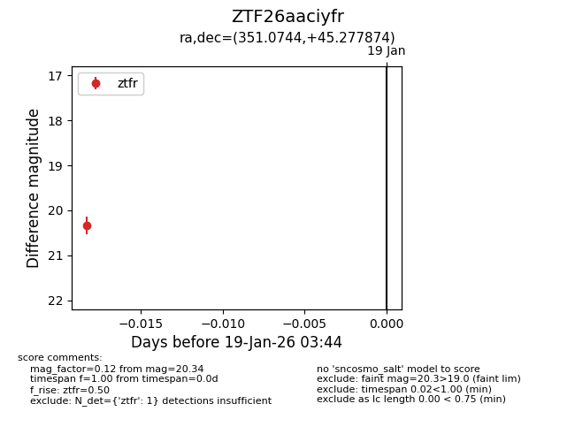
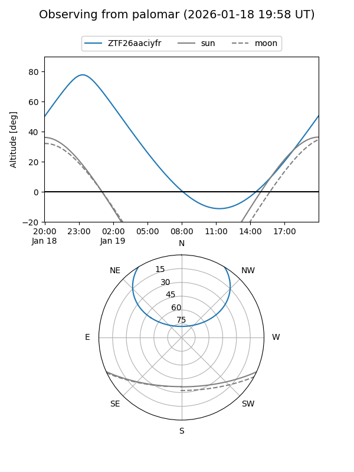

ZTF26aaciyfr
Target ZTF26aaciyfr at 2026-01-19 03:45
Aliases and brokers:
FINK: link
Lasair: link
ALeRCE: link
alt names
ZTF26aaciyfr (ztf,fink_ztf)
Coordinates:
equatorial (ra, dec) = 351.0744,+45.27787
equatorial (HMS+DMS) = 23:24:17.86,+45:16:40.35
galactic (l, b) = (107.2518,-14.92429)
Flags:
Photometry:
last ztfr=20.34
1 ztfr detections
Lightcurve

Visibility


Additional plots